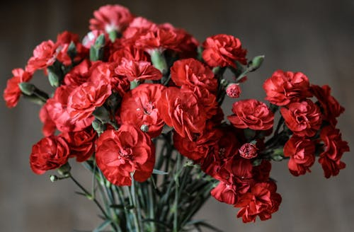

CRAVO

O que é?
O Cravo é uma das flores mais cultivadas no mundo, conhecida por suas pétalas com bordas serrilhadas e fragrância picante. Originário da região mediterrânea, ele carrega uma carga simbólica enorme, representando amor, fascinação e distinção. É uma flor extremamente durável após o corte, sendo a favorita para lapelas e arranjos festivos.
Como cuidar?
Cravos são plantas resistentes, mas apreciam atenção aos detalhes:
- Luz: Precisam de muito sol! O ideal é que recebam luz solar direta por pelo menos 4 a 6 horas diárias.
- Solo: Preferem solos alcalinos, leves e muito bem drenados. Eles são sensíveis ao excesso de umidade nas raízes.
- Rega: Regue a base da planta 2 a 3 vezes por semana. Evite molhar a folhagem para prevenir o surgimento de manchas e fungos.
- Circulação: Gostam de locais bem arejados, o que ajuda a manter a planta saudável e livre de pragas comuns.
Curiosidades
- Significado das Cores: Cravos vermelhos simbolizam admiração, enquanto os brancos representam amor puro e boa sorte.
- Edatibilidade: As pétalas de cravo são comestíveis e têm um sabor levemente doce, sendo usadas em saladas e na decoração de bolos.
- Flor dos Deuses: Seu nome científico, *Dianthus*, vem das palavras gregas "Dios" (deus) e "Anthos" (flor).
- Resistência: É uma das flores de corte que mais dura em vasos, podendo chegar a quase três semanas se a água for trocada regularmente.